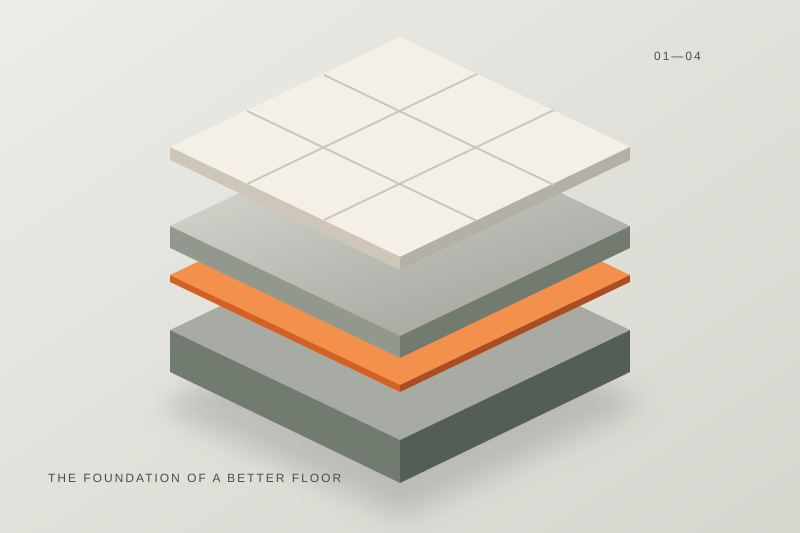

Many self-leveling underlayments can be installed over plywood, but plywood substrates typically have additional requirements — a wood-rated primer, sometimes a reinforcing mesh, and a maximum allowable subfloor deflection — that don't apply to pours over concrete. Always confirm these specifics on your product's technical data sheet before pouring.

Why Plywood Is Different From Concrete
Concrete is rigid and dimensionally stable; plywood flexes under load and can expand or contract slightly with humidity. A self-leveling layer poured over plywood needs to tolerate some flex without cracking or losing bond, which is why not every product is rated for wood substrates.
Subfloor Deflection Limits
Manufacturers that support pours over plywood usually specify a maximum deflection (how much the subfloor is allowed to flex under load, often expressed as a span-to-deflection ratio like L/360). Subfloors that flex more than the rated limit typically need to be reinforced or additional layers of plywood added before a self-leveling pour will hold up.
Primer and Reinforcing Mesh
A primer formulated for wood substrates is usually required to control absorption and improve bond, since plywood behaves very differently from porous concrete. Some manufacturers also require or recommend a fiberglass or metal reinforcing mesh embedded in the pour over wood substrates, particularly for thicker pours, to help resist cracking from subfloor movement.
Preparation Steps
- Confirm the plywood is structurally sound, properly fastened, and within the product's deflection limit.
- Sand or degloss any surface coatings and vacuum thoroughly.
- Apply the wood-rated primer specified by the manufacturer.
- Install reinforcing mesh if required by the product instructions.
- Mix and pour following the standard process in How to Use Self-Leveling Concrete.
Frequently Asked Questions
Can I pour self-leveling concrete directly over OSB?
Some products support OSB with the correct primer, but OSB's absorption and flex characteristics differ from plywood — check that your specific product's data sheet lists OSB as an approved substrate.
Do I need mesh for a thin pour over plywood?
Not always — mesh requirements are typically tied to pour depth and the specific product; thin featheredge pours sometimes don't require it, but this should be confirmed against the manufacturer's instructions rather than assumed.
Related Guides
Sources & References
- Manufacturer technical data sheets covering wood-substrate deflection limits and mesh requirements